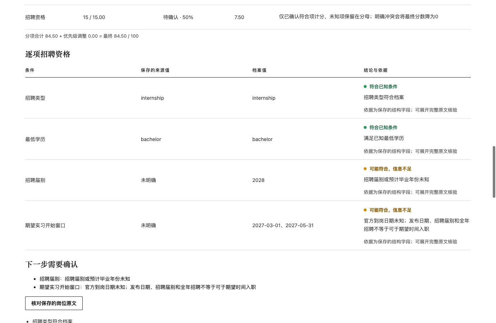

Java + Python · 求职情报工作台
SignalHub
岗位会过期，“技能匹配”不等于“有资格”。SignalHub 在本机保存官方链接、JD 原文和版本历史，用可解释的规则打分，并跟踪投递进度。
- Java 与 Python Worker 通过同一个 PostgreSQL 任务队列协作：
FOR UPDATE SKIP LOCKED领取任务，15 分钟租约加attempts防止旧 Worker 覆盖新结果，最多重试 3 次，同内容重放会去重。 - JD 变化会生成新版本，旧匹配分数随即隐藏并重算。评分只说明条件匹配程度，不是录用概率。
- 合成演示里的“数据工程实习”重算得 84.5/100；JD 没写到岗时间，所以“招聘资格”显示“信息不足”，而不是硬判通过。
- Java 21
- Spring Boot 4.1
- Python 3.12 Worker
- PostgreSQL 17
- Flyway V1–V12
- Docker Compose
限制：仅本机单用户、无认证；连续 72 小时稳定性运行尚未完成；演示数据是合成的。
